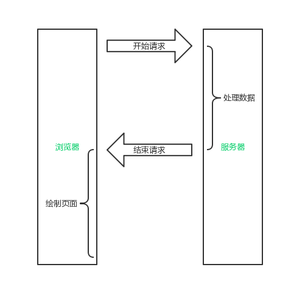
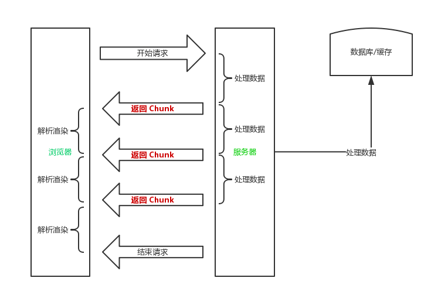

BigPipe 原理实现与使用场景分析
在昨天的 FCC 上海线下技术分享会上，“糖爸”介绍了来自 Facebook 的 BigPipe 技术，以前只知道原理但并没有动手实践过，今天遂写一篇文章详细记录一下。核心内容：BigPipe 主要利用了 HTTP1.1 的分块传输编码机制，可以有效的降低大页面的请求数量，使前端后端并行处理，提高首屏加载速度。
实验环境基于 Node 7.5，这里直接使用 Express 框架来实现分块传输编码，Express 的响应对象的方法 res.render(view [, locals] [, callback])，如果为其提供一个方法作为第二个或第三个参数，则所有的响应会自动以 Transfer-Encoding: chunked 的方式进行传输，因此当所有响应内容输出后，需要手动结束该次请求。
BigPipe 的优势在于可以让服务器与浏览器并行处理，在浏览器渲染其他 Pagelet 服务器也同时在获取其他 Pagelet 所需要的信息，并且 BigPipe 使用了阻塞的 HTTP 请求，从某种程度上来讲也大大降低了网站页面的请求数量，从两方面大大提高了浏览器和服务器的并行效率。
传统的前后端的沟通过程见下图：

BigPipe 的前后端并行处理过程见下图：

可以看见，相比较于传统的前后端串行的处理方式，基于 Chunk 的并行处理方式可以更加高效的同时利用浏览器与服务器的处理资源，同时将页面按照特定的“分块”进行 Pagelet 处理，也能有效的减少传统页面的请求数量。
测试环境基于 Express 快速搭建，这里只列出主要的代码。BigPipe 的处理要前后端配合，后端解析到数据后发送给前端，在前端以页面内嵌 JS 的方式进行调用，因此前后端要统一并抽象出一层规范，用于前后端的通信交流。这里我们以如下 JSON 数格式作为通信的规范。每一个从后端发送过来的 Pagelet Bundle 数据都以如下格式统一封装。其中 part 字段代表该 Pagelet 数据的渲染区块，payload 则是需要渲染的数据，具体的数据渲染方式要根据业务或者技术选型的框架来觉得。
{
"part": "#main",
"payload": {}
}
由于 Node 本身的异步特性，使得在 Node 下实现 BigPipe 变得十分简单。服务器端用于模拟阻塞分块传输的示例代码如下。
res.render("index", function(err, str) {
// 先写入页面 DOM 和样式；
res.write(str);
// 模拟数据获取返回；
var json = (part, info) => {
return JSON.stringify({
part: part,
data: {
innerText: info
}
});
}
new Promise(function(resolve, reject) {
setTimeout(function() {
// 输出分块的 Chunk 数据；
res.write(`<script>Pagelet.render('${json("#pagelet1", "Hello!")}');</script>`);
return resolve();
}, 2000)
}).then(function(data) {
return new Promise(function (resolve, reject) {
setTimeout(function() {
// 输出分块的 Chunk 数据；
res.write(`<script>Pagelet.render('${json("#pagelet2", "Hi!")}');</script>`);
return resolve();
}, 8000)
});
}).then(function(data) {
// 全部发送完毕后结束请求；
res.end();
});
});
客户端浏览器用于处理 Pagelet Bundle 数据的 JS 逻辑如下：
class Pagelet {
static render(json) {
let renderData = JSON.parse(json);
// Mock 业务逻辑；
document.querySelector(renderData.part).innerText = renderData.data.innerText;
}
}
对应的 HTML 代码如下：
<div id="pagelet1"></div>
<div id="pagelet2"></div>
最后通过浏览器可以看到，该 HTTP 请求的 Response 头部返回的传输类型为分块传输编码：
这样前端浏览器便可以在服务器返回数据时立即进行数据的填充，同时后端并行的继续处理数据并返回给前端，整个前后端的业务处理效率大大提升。但要注意的是前端在处理的过程中不能使用 DOMContentLoaded 来监听 DOM 的加载，因为 DOMContentLoaded 一定是在页面加载完成之后（HTTP 请求结束之后）才触发的。所以在填充数据时一定要使用另外的手段确保此时对应的 DOM 已经被渲染完毕。
那么 BigPipe 适合什么样的场景呢？BigPipe 比较适用于页面具有明显的分块内容，且各个分块内容在后端的获取相对独立，且服务端的运算时间大于300~500ms。但具体的应用还是要根据业务以及进度来划分。